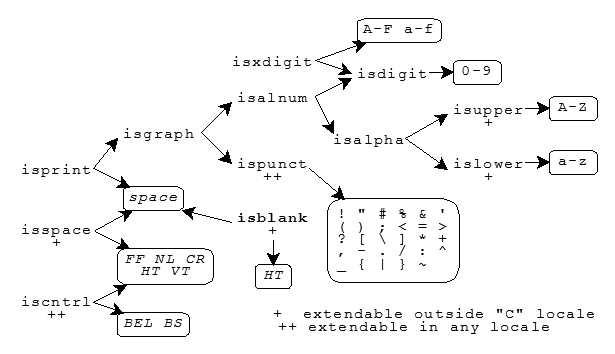

<ctype.h>isalnum · isalpha · isblank · iscntrl · isdigit
· isgraph · islower · isprint · ispunct · isspace
· isupper · isxdigit · tolower · toupper
Include the standard header <ctype.h> to declare several functions that are
useful for classifying and mapping codes from the target character set. Every function that has a parameter
of type int can accept the value of the macro EOF or any
value representable as type unsigned char. Thus, the argument can be the value returned by any of
the functions fgetc, fputc, getc, getchar, putc, putchar, tolower, toupper, and ungetc. You must not
call these functions with other argument values.
Other library functions use these functions. The function scanf, for example, uses the function isspace to determine valid white space within an input field.
The character classification functions are strongly interrelated. Many are defined in terms of other functions. For characters in the basic C character set, here are the dependencies between these functions:

The diagram indicates with + those functions that can define additional characters in
locales other than the "C" locale. Boldface
indicates a feature added with C99.
The diagram tells you that the function isprint returns nonzero for
space or for any character for which the function isgraph returns nonzero. The function isgraph, in turn, returns nonzero for any character for which either the
function isalnum or the function ispunct returns nonzero. The function isdigit, on the other hand, returns nonzero only for the digits
0-9.
An implementation can define additional characters that return nonzero for some of these functions. Any character set can contain additional characters that return nonzero for:
iscntrl (provided the characters cause isprint to return zero)ispunct (provided the characters cause isalnum to return zero)The diagram indicates with ++ those functions that can define additional characters in any
character set. Moreover, locales other than the "C"
locale can define additional characters that return nonzero for:
isalpha, isupper, and
islower (provided the characters cause iscntrl, isdigit, ispunct, and isspace to return zero)isblank (provided the characters cause isalnum to return zero)isspace (provided the characters cause isprint to return zero)Note that an implementation can define locales other than the "C" locale in which a character can cause isalpha (and hence isalnum) to return
nonzero, yet still cause isupper and islower to return zero.
int isalnum(int c); int isalpha(int c); int isblank(int c); [added with C99] int iscntrl(int c); int isdigit(int c); int isgraph(int c); int islower(int c); int isprint(int c); int ispunct(int c); int isspace(int c); int isupper(int c); int isxdigit(int c); int tolower(int c); int toupper(int c);
isalnumint isalnum(int c);
The function returns nonzero if c is any of:
a b c d e f g h i j k l m n o p q r s t u v w x y z A B C D E F G H I J K L M N O P Q R S T U V W X Y Z 0 1 2 3 4 5 6 7 8 9
or any other locale-specific alphabetic character.
isalphaint isalpha(int c);
The function returns nonzero if c is any of:
a b c d e f g h i j k l m n o p q r s t u v w x y z A B C D E F G H I J K L M N O P Q R S T U V W X Y Z
or any other locale-specific alphabetic character.
isblankint isblank(int c); [added with C99]
The function returns nonzero if c is any of:
HT space
or any other locale-specific blank character.
iscntrlint iscntrl(int c);
The function returns nonzero if c is any of:
BEL BS CR FF HT NL VT
or any other implementation-defined control character.
isdigitint isdigit(int c);
The function returns nonzero if c is any of:
0 1 2 3 4 5 6 7 8 9
isgraphint isgraph(int c);
The function returns nonzero if c is any character for which either isalnum or ispunct returns nonzero.
islowerint islower(int c);
The function returns nonzero if c is any of:
a b c d e f g h i j k l m n o p q r s t u v w x y z
or any other locale-specific lowercase character.
isprintint isprint(int c);
The function returns nonzero if c is space or a character for which
isgraph returns nonzero.
ispunctint ispunct(int c);
The function returns nonzero if c is any of:
! " # % & ' ( ) ; <
= > ? [ \ ] * + , -
. / : ^ _ { | } ~
or any other implementation-defined punctuation character.
isspaceint isspace(int c);
The function returns nonzero if c is any of:
CR FF HT NL VT space
or any other locale-specific space character.
isupperint isupper(int c);
The function returns nonzero if c is any of:
A B C D E F G H I J K L M N O P Q R S T U V W X Y Z
or any other locale-specific uppercase character.
isxdigitint isxdigit(int c);
The function returns nonzero if c is any of:
0 1 2 3 4 5 6 7 8 9 a b c d e f A B C D E F
tolowerint tolower(int c);
The function returns the corresponding lowercase letter if one exists and if isupper(c); otherwise, it returns c.
toupperint toupper(int c);
The function returns the corresponding uppercase letter if one exists and if islower(c); otherwise, it returns c.
See also the Table of Contents and the Index.
Copyright © 1992-2010 by P.J. Plauger and Jim Brodie. All rights reserved.